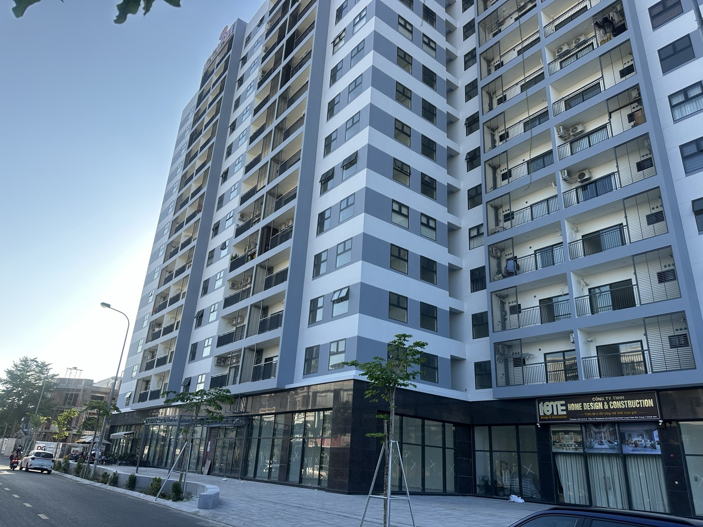

Điểm tin BĐS Khánh Hoà tuần 19–25/10: lãi giảm, ba dự thảo luật và giá thuê tăng
Tuần này có nhiều tin lớn nhất kể từ đầu quý: ngân hàng đồng loạt hạ lãi, Quốc hội bàn cùng lúc ba dự thảo luật chạm thẳng vào nhà đất, và Khánh Hoà lần đầu có quy hoạch chung đô thị được báo chí đưa tin. Tôi gom lại sáu tin đáng để ý, mỗi tin kèm một dòng "nghĩa là gì" cho người đang cầm tiền.

Một toà chung cư mới ở Nha Trang. Tuần này, ba dự thảo luật đều có điều khoản chạm vào người mua căn hộ.
1. Ngân hàng đồng loạt giảm lãi — nhưng chưa phải lãi vay mua nhà
Ngày 18/10 Ngân hàng Nhà nước ra văn bản yêu cầu các ngân hàng giảm tối thiểu 0,5%/năm lãi tiền gửi kỳ hạn từ 6 tháng và giảm 1,5–2%/năm lãi cho vay sản xuất kinh doanh, lĩnh vực ưu tiên; ngày 21/10 có thêm công văn 9736 nói rõ ngân hàng nào không làm có thể bị giảm chỉ tiêu tăng trưởng tín dụng. Chỉ trong hai ngày 19–20/10 đã có ít nhất 13 ngân hàng công bố giảm lãi cho vay (Agribank, BIDV, VietinBank, MB, ACB, Sacombank, SHB, OCB…) và 16 ngân hàng giảm lãi huy động, phổ biến 0,5%, cao nhất 0,7%/năm (nguồn: CafeF 19/10, 21/10, 22/10; Dân trí 19/10).
Có một chỗ số liệu đang vênh: ngày 21/10 báo dẫn lãi niêm yết 12 tháng ở phần lớn ngân hàng đã dưới 7%/năm; ngày 23/10 một bài khác lại ghi kỳ 6–12 tháng phổ biến 6–8%/năm. Hai bài đo hai nhóm ngân hàng khác nhau. Dải an toàn để nói: gửi 12 tháng hiện quanh 6–7%, cao nhất khoảng 8% (nguồn: CafeF 21/10 dẫn Tiền Phong; CafeF 23/10).
Nghĩa là gì: các gói giảm tuần này chủ yếu dành cho vay sản xuất kinh doanh và khoản vay mới. Trong mọi bài tôi đọc, chưa ngân hàng nào công bố giảm lãi vay mua nhà trên diện rộng. Ai đang tính vay mua nhà đừng vội lấy mức "giảm 2%" đưa vào bảng tính — hãy hỏi thẳng ngân hàng biểu lãi cho đúng mục đích vay của mình. Ai đang có dư nợ kinh doanh thì nên hỏi xin áp dụng mức giảm cho dư nợ hiện hữu, vì Thống đốc nói sẽ "xem xét" cả phần này.
2. Quốc hội bàn ba dự thảo luật nhà đất cùng một ngày
Sáng 22/10 Quốc hội nghe trình, chiều 22/10 thảo luận tổ ba dự thảo: Luật Đất đai (sửa đổi), Luật Nhà ở (sửa đổi) và Luật Kinh doanh bất động sản (sửa đổi). Tất cả vẫn là DỰ THẢO, chưa thông qua. Bốn điểm tôi thấy chạm thẳng vào túi tiền người mua:
- 5% cuối của hợp đồng mua nhà dự án: trước khi người mua nhận sổ, chủ đầu tư không thu quá 95%; 5% còn lại được đề xuất chuyển vào tài khoản mở tại ngân hàng, người mua hưởng lãi, chỉ giải ngân khi có sổ. Tuy vậy dự thảo vẫn để phương án "hoặc theo thoả thuận các bên" — một đại biểu đoàn Khánh Hoà đã đề nghị không để khoản này phụ thuộc hoàn toàn vào thoả thuận vì người mua yếu thế (nguồn: CafeF 22/10 dẫn VTC News; Báo Khánh Hoà 24/10).
- Mã định danh điện tử cho từng sản phẩm bất động sản — nhưng chính đại biểu này lưu ý: có mã định danh không có nghĩa là sản phẩm đã đủ pháp lý để giao dịch (nguồn: Báo Khánh Hoà 24/10).
- Nhà ở xã hội: theo phát biểu của Thủ tướng tại tổ, dự thảo đề xuất sau 5 năm người mua chỉ được bán lại cho người thuộc diện được mua nhà ở xã hội, không còn bán theo giá thị trường như Luật Nhà ở 2023 hiện hành. Thời hạn sử dụng căn hộ chung cư được đề xuất theo niên hạn công trình (nguồn: CafeF 22/10).
- Đất dự án chậm sử dụng: dự thảo Luật Đất đai đề xuất thu tiền luỹ tiến theo thời gian vi phạm, quá 60 tháng thì thu hồi; đồng thời bỏ quy định giá đất cụ thể, giữ bảng giá đất và hệ số điều chỉnh (nguồn: CafeF 22/10).
Cùng tuần, chiều 23/10 Quốc hội thảo luận đề xuất thuế 0,2%/năm, không áp hạn mức với đất bỏ hoang, chậm đưa vào sử dụng. Câu hỏi then chốt được đại biểu nêu ra nhưng chưa có lời giải: đất ở hợp pháp của hộ gia đình, cá nhân chưa xây có bị tính hay không (nguồn: CafeF 23/10 dẫn Tiền Phong).
Nghĩa là gì: ai đang mua nhà ở xã hội với ý định "đủ 5 năm rồi bán lại" nên tính lại — nếu điều khoản này được thông qua, người mua lại bị giới hạn trong một nhóm hẹp và giá bán lại khó theo giá thị trường. Ai giữ đất trống lâu năm thì chưa cần lo, nhưng nên theo sát câu trả lời cho câu hỏi "đất ở chưa xây có bị tính không". Tôi sẽ cập nhật khi có văn bản chính thức.
3. Quy hoạch chung đô thị Khánh Hoà lần đầu lên báo
Quyết định 2007/QĐ-TTg phê duyệt Quy hoạch chung đô thị Khánh Hoà đến 2050 được báo chí đưa tin ngày 20–21/10: phạm vi 8.706,75 km², dân số dự kiến 2,7–2,8 triệu năm 2030 và 5–5,1 triệu năm 2050; cấu trúc 2 phân vùng, 3 cực, 4 hành lang; nâng cấp sân bay quốc tế Cam Ranh, phát triển sân bay quốc tế Vân Phong (nguồn: Báo Khánh Hoà 20/10; CafeF 21/10 dẫn Tiền Phong).
Riêng trung tâm hành chính tỉnh mới ở khu vực Cam Lâm: báo dẫn quyết định ghi khoảng 115 ha, trong khi trước đó Sở Xây dựng đề xuất vị trí khoảng 116,3 ha. Hai con số có thể là ranh nghiên cứu và số làm tròn; vị trí cụ thể chờ quy hoạch phân khu. Giai đoạn đầu các cơ quan vẫn ở Nha Trang, di dời theo nguồn lực — không có mốc năm. Cũng ở Cam Lâm, quy hoạch chi tiết 1/500 một phần Tiểu khu B đô thị phía bắc (~213,67 ha, 4.850 dân) đã được công khai, tính chất là chỉnh trang khu dân cư hiện hữu (nguồn: Báo Khánh Hoà ~20/10).
Nghĩa là gì: đất Cam Lâm có thêm một văn bản cấp Thủ tướng làm cơ sở, nhưng đừng định giá theo kịch bản "trung tâm hành chính dời về ngay". Còn phường Cam Lâm thì đến hôm nay tôi chưa thấy văn bản phê duyệt mới. Lô nào nằm trong khu có quy hoạch 1/500 thì vẫn phải tra bản vẽ gốc — tin báo không thay được bản vẽ.
4. Giá thuê nhà Nha Trang tăng theo khách Nga, khách Trung Quốc sụt
Báo Khánh Hoà ngày 24/10 dẫn ý kiến môi giới: giá thuê nhiều căn hộ, nhà riêng lẻ ở Nha Trang tăng 40–60% so với 3 tháng trước; căn 2 phòng ngủ trung tâm quý III chào khoảng 15 triệu/tháng, so với khoảng 10 triệu đầu năm. Lý do được nêu: cán bộ dồn về Nha Trang sau sắp xếp đơn vị hành chính, du lịch phục hồi, và khách Nga 9 tháng tăng gần gấp 3 — thuê dài ngày, nhất là phía bắc Nha Trang.
Ngược lại, khách Trung Quốc đang giảm. Có hai số, đo hai phạm vi khác nhau: khoảng 470.000 lượt đến tỉnh trong 9 tháng, giảm 6,5% (Báo Khánh Hoà 20/10), và 217.026 lượt bay thẳng qua nhà ga quốc tế Cam Ranh, giảm gần 44% (Báo Khánh Hoà 22/10). Ghép lại: khách bay thẳng sụt mạnh, phần còn lại đến bằng nối chuyến.
Nghĩa là gì: con số 40–60% là ý kiến của một môi giới và là giá chào, không phải thống kê giao dịch; lại trùng đầu mùa khách Nga tránh đông. Ai mua căn hộ để cho thuê hãy hỏi chủ căn giá thuê và số tháng có khách của 12 tháng qua, đừng nhân giá đỉnh mùa ra cả năm. Và đừng đưa khách Trung Quốc vào kịch bản dòng tiền cơ sở — coi đó là phần thưởng nếu có.
5. Hạ tầng: đường băng Cam Ranh 1.920 tỷ và hạn chót 30/12 cho dự án tồn đọng
Dự án cải tạo đường cất hạ cánh, đường lăn sân bay quốc tế Cam Ranh — nhóm B, Bộ Xây dựng đầu tư, khoảng 1.920 tỷ đồng, thực hiện 2026–2028 — đang được tỉnh gỡ vướng vật liệu cát, bãi đổ thải (nguồn: Báo Khánh Hoà ~21/10). Lưu ý: đây là cải tạo đường băng đã khai thác hơn 50 năm, không phải mở rộng nhà ga.
Tỉnh cũng công bố danh mục giao thông ưu tiên vốn đầu tư công 2026–2030 cho cực trung tâm: chỉnh trang hạ tầng phía đông đường Trần Phú – Phạm Văn Đồng, đường Vành đai 3, đường liên vùng Diên Khánh, đường nối Quốc lộ 1 đến Hương lộ 39 — mới là danh mục định hướng, chưa có vốn từng dự án hay mốc khởi công (nguồn: Báo Khánh Hoà 20/10). Với 257 dự án tồn đọng (đã xử lý 106, còn 151), Chủ tịch UBND tỉnh yêu cầu đến 30/12 phải tháo gỡ xong hoặc thu hồi dự án không đủ điều kiện (nguồn: Báo Khánh Hoà 19/10).
Nghĩa là gì: ai đang giữ hoặc định mua hàng ở dự án chậm triển khai nên hỏi chủ đầu tư thẳng một câu: dự án đang ở nhóm nào — đã gỡ, đang gỡ, hay có nguy cơ thu hồi. Mốc 30/12 là mốc đáng ghi vào lịch.
6. Tồn kho cả nước gần gấp đôi, đấu giá vẫn chờ kết quả
Báo cáo quý III của Bộ Xây dựng: tồn kho tại dự án khoảng 51.950 sản phẩm, tăng 94% so cùng kỳ; giao dịch quý III khoảng 92.004, giảm 8% so quý trước; giá giao dịch có xu hướng giảm. Phân khúc nghỉ dưỡng kẹt nặng nhất: theo DKRA, nhà phố/shophouse nghỉ dưỡng cả nước không ghi nhận giao dịch, 79% condotel là hàng tồn (nguồn: VnExpress 18/10; CafeF 18/10). Số liệu này đi ngược với dự báo lạc quan của VARS về quý IV — tôi giữ cả hai: một bên là số đã xảy ra, một bên là dự báo.
Hai phiên đấu giá tôi theo dõi — nhà đất 30 Tô Vĩnh Diện (22/10) và thửa 217 ở Cam Lâm đấu lại với giá khởi điểm đã hạ 10% (23/10) — đến sáng nay tôi chưa thấy công bố kết quả. Phiên kế tiếp: thửa 365 tờ 28 phường Bắc Nha Trang, ngày 26/10, khởi điểm 2,606 tỷ.
Nghĩa là gì: Nha Trang và Cam Ranh có nhiều đúng loại hàng đang kẹt nhất — nghỉ dưỡng không tạo dòng tiền. Người có tiền mặt đang có lợi thế thương lượng; còn người mua nên ưu tiên tài sản đang khai thác được, có số thuê thật.
Điều tôi để ý nhất tuần này
Tuần này chính sách nói rất nhiều về "giảm": giảm lãi, và cả phát biểu của Thủ tướng ngày 18/10 rằng khi phát triển mạnh nhà ở xã hội, nhà cho thuê và thông qua Luật Đất đai sửa đổi thì giá nhà đất sẽ giảm (nguồn: CafeF 18/10). Đó là định hướng, chưa phải văn bản. Trong khi chờ, tôi nhìn vào thứ đo được: lãi vay mua nhà chưa giảm, tồn kho đang tăng, còn giá thuê ở Nha Trang đang lên. Người mua có thời gian để hỏi kỹ; người giữ tài sản cho thuê có thêm lý do để tính lại số thật của mình.
Bản tin tổng hợp từ các nguồn báo chí trong tuần 19–25/10/2026 mà tôi đọc và gửi khách qua Zalo. Đây là tin tổng hợp, không phải văn bản gốc; các dự thảo luật nêu trong bài chưa được Quốc hội thông qua. Trước khi dùng bất kỳ con số nào để ra quyết định, anh/chị nên kiểm chứng lại tại nguồn chính thức.
"Rồi, ngày mới tốt lành nhé."
Sống tử tế · Kiếm tiền hạnh phúc · Cho đi giá trị
Muốn nhận bản tin thị trường qua Zalo?
Tôi đọc tin thị trường và gửi bản tóm tắt cho khách qua Zalo vào sáng thứ Ba, thứ Năm, thứ Bảy, kèm tổng hợp cuối tuần — có ghi nguồn và nói rõ chỗ nào số liệu đang vênh. Nhắn "BẢN TIN" để nhận miễn phí.
Nhắn Zalo — 0869 668 638